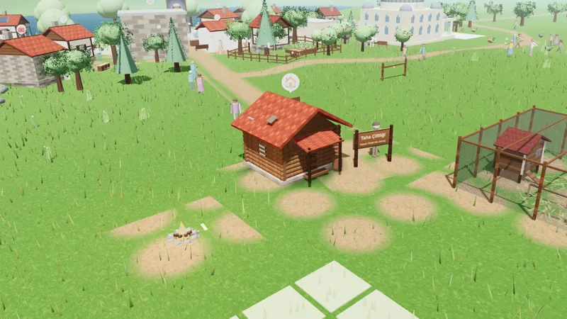
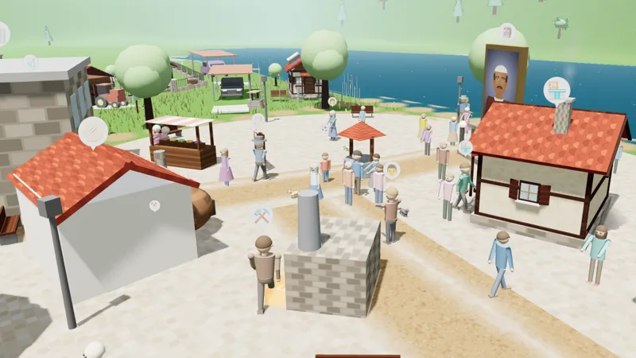
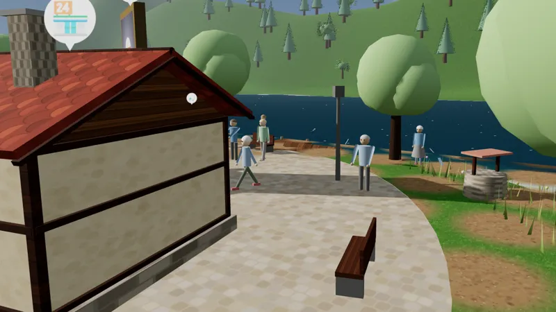
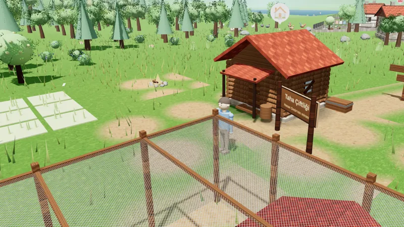
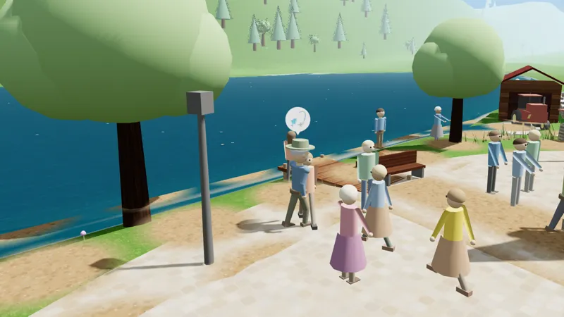
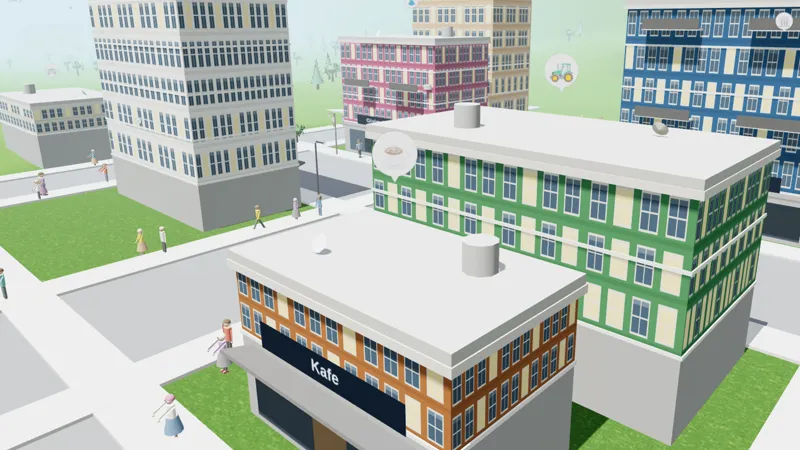

Tasami'nin ilk oyunu
Toprağın Mirası
Dedenden kalan toprağa boş elle gel. Çiftliğini kur, köyünü büyüt, Hazar Gölü kıyısında kendi hikâyeni yaz.
Oyun içinden çekilmiştir.
Erken erişim
Toprağın Mirası yakında mağazalarda. İlk oynayanlardan olmak ister misin?
Google Play · Kapalı test
Android test sürümüne katılmak için Google Play'de kullandığın Gmail adresini bırak. Seni test listesine ekleyip davet bağlantısını e-postayla göndereceğiz.
App Store · iOS
iPhone ve iPad sürümü üzerinde çalışıyoruz.
YakındaBir köyün yeniden doğuşu
Rahmetli Hasan Dede'nin torunusun. Elinde bir çanta, cebinde birkaç altınla Sivrice'ye, dedenin yıllardır bekleyen çiftliğine geliyorsun.
Önce odun toplayıp ip örüyorsun, ilk tavuklarını alıyorsun. Sonra tarlalar, ahırlar, köy çeşmesi, kahvehane ve pansiyon geliyor. Köy büyüdükçe Kuzey Diyarı'nın yolları açılıyor ve sonunda dedenin konağını geri alıyorsun.
- Perde 1
Boş Eller
Odun, ip, sepet ve ilk tavuklar. Hayatta kalmayı öğren.
- Perde 2
Toprağa Kök
Ahır, tarlalar, çalışanlar, turistler ve dalış merkezi.
- Perde 3
Kuzey Diyarı
Çamlıbel, değirmen, taş ocağı, arıcılık ve okul.
- Perde 4
Büyük Miras
Sulama kanalı, müze, göl festivali ve dede konağı.
Neler yapabilirsin?
Tarım ve hayvancılık
Ek, sula, biç. Tavuk, inek, at ve eşek besle; ahırını ve kümesini büyüt.
Köyünü kur
Çeşme, kahvehane, pansiyon, müze. Muhtarın isteklerini karşıla, köyü turistlerle doldur.
Göl ve doğa
Hazar Gölü'nde balık tut, dal, ormanda mantar ve meyve topla. Mevsimler ve hava değişir.
Çok oyunculu
Arkadaşının köyünü ziyaret et, kooperatif kur, pazarda ticaret yap, bölge telsiziyle konuş.
Çalışanlar
Murat hayvanlara, Ayşe tarlaya bakar. Sen oyunda değilken bile çalışmaya devam ederler.
Koca bir dünya
Otobüsle şehre in, taksiyle Kuzey Diyarı'na çık. Köyler, kasabalar ve yüzlerce insan.
Oyundan görüntüler
Tümü oyunun içinden, gerçek görüntülerdir.












Stüdyo
Tasami hakkında
Tasami, oyun tasarlayan ve geliştiren, mobil ve web uygulamaları üreten bağımsız bir stüdyo. İki kimya mühendisi tarafından kuruldu.
Mühendislikten gelen alışkanlıkla çalışıyoruz: önce sistemi kuruyoruz, sonra ölçüyor, deniyor ve iyileştiriyoruz. Oyunlarımızda bu yüzden ekonomi, üretim zinciri ve dünya birbirine bağlı ve tutarlı.
Adımız kurucularımızın adlarından geliyor: Taha ve Sami.
- Oyun tasarımı ve geliştirme
- Mobil uygulamalar (Android)
- Web uygulamaları
Bize ulaşın
Oyun hakkında görüşünüz, iş birliği teklifiniz ya da bir uygulama fikriniz mi var? Yazın, dönüş yapalım.
✉ E-posta gönderinfo@tasami.com.tr